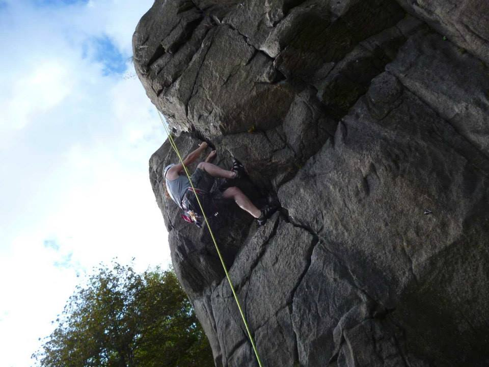

Home
ValidationFunctions
DateExternal
Conditional_Logic
Loops&Arrays
Gallery
Frontpage
My Climbing Log Website
This website will demonstrate several elements of Web Design.
Please use the navigation pane at the top to browse my Index.
Link To Climbing Routes in my area
//link to external website
